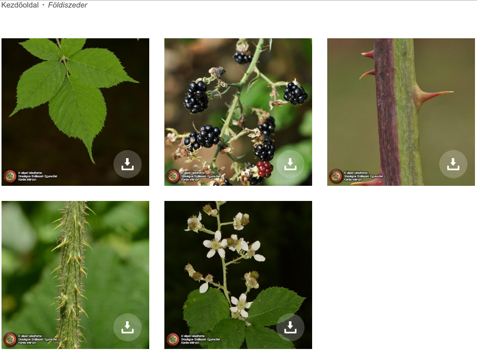

<!doctype html>
<html lang="en">

	<head>
		<meta charset="utf-8">

		<title>Gyümölcsöző sablonok</title>

		<meta name="description" content="A framework for easily creating beautiful presentations using HTML">
		<meta name="author" content="bkil.hu">

		<meta name="apple-mobile-web-app-capable" content="yes">
		<meta name="apple-mobile-web-app-status-bar-style" content="black-translucent">

		<meta name="viewport" content="width=device-width, initial-scale=1.0, maximum-scale=1.0, user-scalable=no, minimal-ui">

		<link rel="stylesheet" href="css/reveal.css">
		<link rel="stylesheet" href="css/theme/white.css" id="theme">

		<!-- Code syntax highlighting -->
		<link rel="stylesheet" href="lib/css/zenburn.css">

		<!-- Printing and PDF exports -->
		<script>
			var link = document.createElement( 'link' );
			link.rel = 'stylesheet';
			link.type = 'text/css';
			link.href = window.location.search.match( /print-pdf/gi ) ? 'css/print/pdf.css' : 'css/print/paper.css';
			document.getElementsByTagName( 'head' )[0].appendChild( link );
		</script>

		<!--[if lt IE 9]>
		<script src="lib/js/html5shiv.js"></script>
		<![endif]-->
	</head>

	<body>

		<div class="reveal">

			<!-- Any section element inside of this container is displayed as a slide -->
      <!-- [Analysis of collections](http://blog.gmarceau.qc.ca/2009/05/speed-size-and-dependability-of.html) -->

<!--
				<section>

				</section>
-->

			<div class="slides">
				<section data-markdown style="text-align: left;"> <script type="text/template">
* **Gyümölcsöző sablonok**
* *GnuPG:  [...] F2D8 C3CE D372 836D*
				</script> </section>

				<section>

        </section>

				<section data-markdown style="text-align: left;"> <script type="text/template">
#### http://fabook.oee.hu

				</script> </section>

				<section data-markdown style="text-align: left;"> <script type="text/template">
#### FA BOOK
* Országos Erdészeti Egyesület
* növényhatározó alkalmazás és weboldal
* latin név
* fotók: levél, virág, termés
				</script> </section>

				<section data-markdown style="text-align: left;"> <script type="text/template">
#### FA BOOK szerzői jogok
* "A Fa Book applikáció és az online fotótár létrehozását a *Földművelésügyi Minisztérium támogatta*."
* "képei szabadon letölthetők, és a forrás megjelölésével (Forrás: Országos Erdészeti Egyesület) *oktatáshoz, környezeti nevelési munkában, előadásokhoz, vagy tanulmányi versenyeken*, bárki felhasználhatja őket"
* kb. <a href="https://creativecommons.org/licenses/by-nc-nd/4.0/">CC BY-NC-ND</a>
				</script> </section>

				<section data-markdown style="text-align: left;"> <script type="text/template">
#### Tulajdonjog: elméletben
* **access=private** vagy **access=yes** címke
* Magyarországon a közterületek hasznosításának joga az önkormányzatnál vagy a közútkezelőnél van
* Régen a lakosság megvásárolta egy idény termésének szüretelési jogát, manapság gazdaságilag *nem gyümölcsöző*, ezzel nem foglalkoznak - csak kárbavész
				</script> </section>

				<section data-markdown style="text-align: left;"> <script type="text/template">
#### Tulajdonjog: illemtan
* Helyismeret szükséges: vannak települések ahol elfogadott, hogy a lakók a ház előtt is termelnek saját részre, ilyenkor "eltulajdonításnak" számít!
* Van ahol tábla jelzi, hogy szabadon szedhető
* Biztosabbnak számít: parkok, rétek, tömbházak környezete, városias részek, út másik oldala
* Vannak típusok amit tipikusan díszfaként tartanak (fosóka szilva, török mogyoró), elvadul (mandula, bodza) vagy nem szeretnek (szederfa)
			</script> </section>

				<section data-markdown style="text-align: left;"> <script type="text/template">
#### Használati esetek
* **Ehető** termésű: túrákon jól esik, amúgy csak kárba veszne (gombát csak miután szakértő látta!)
* **Szórakozásra**: makk vagy gesztenye bábunak/dísznek
* Népi **gyógyászat**: tea, főzelék, borogatás
* **Állattartásra**: takarmánynak vagy alomnak
* **Tövises**: kerékpárral vagy drága ruhában óvatosan közelítsük meg
* **Mérgező**: kerülendő
* **Védett**: kerülendő, nem illik felvenni!
			</script> </section>

				<section data-markdown style="text-align: left;"> <script type="text/template">
#### Az utolsó fűszálat is?
* Nem ellenzem ha valaki minden egyes növényt fel akar venni, mert könnyen szűrhető ami nekem kevéssé érdekes
* Én csak azt veszem fel ami közérdeklődésre számot tart, ami sokaknak hasznos lehet, amire később alkalmazást lehet építeni
* Sokszor kihagyom azt ami általános egy adott területen és amúgy nem vész kárba (például a diót megeszik a madarak és vadon sokszor férges, a mandula is sokszor rossz ízű, a bodza mindenhol ott van)
			</script> </section>

				<section data-markdown style="text-align: left;"> <script type="text/template">
#### Pontosság
* Ha nagyot tévedhetünk és nem vagyunk biztosak, inkább ne vegyük fel! (pl. medvehagyma vs. mérgező őszi kikerics vagy gyöngyvirág)
* Csak addig az osztályig vegyük fel amíg biztosak vagyunk benne
* Ha nagyot nem tévedhetünk (kék szilva vs. kék szilva), vegyük fel olyan pontosan ami megfelel a helyi faunának és a legkisebb meglepetés elvének
* Feltüntethetjük *source* vagy *note* címkében, hogy mire alapoztuk a meghatározásunkat (levélzet, virágzat, termés, DNS vizsgálat...), az időpontot pedig *survey_date* címkében
			</script> </section>

				<section>

        </section>

				<section>

        </section>

				<section>

        </section>

				<section>

        </section>

				<section>

        </section>

				<section>

        </section>

				<section data-markdown style="text-align: left;"> <script type="text/template">
#### TagInfo taxon=*
* 182 349 taxon
* 63 065 taxon:species
* 27 641 taxon:pt
* 22 547 taxon:cultivar
* 11 789 taxon:species:varietas
* 4 620 taxon:en
* 1 270 source:taxon
* 919 taxon:genus
* 676 taxon:ru
* 564 taxon:de
* ...
* 146 taxon:hu

			</script> </section>
				<section data-markdown style="text-align: left;"> <script type="text/template">
#### TagInfo species=*
* 1 089 748 species
* 182 424 species:de
* 176 636 species:en
* 84 781 species:it
* 65 156 species:ro
* 27 822 species:nl
* 27 819 species:fr
* 17 209 species:no
* 17 059 species:es
* 12 113 species:FR
* 11 789 taxon:species:varietas
* 7 188 species:pl
		</script> </section>

			</script> </section>
				<section data-markdown style="text-align: left;"> <script type="text/template">
#### TagInfo species
* Acer␣platanoides 58 600 5.38%
* Aesculus␣hippocastanum 32 955 3.02%
* Tilia␣cordata 30 406 2.79%
* Juglans␣regia 30 363 2.79%
* Pinus␣mugo 26 397 2.42%
* Acer␣pseudoplatanus 22 388 2.05%
* Fraxinus␣excelsior 20 085 1.84%
* Quercus␣robur 18 068 1.66%
* Acer␣saccharum 16 077 1.48%
* Gleditsia␣triacanthos 13 653 1.25%
* Tilia␣platyphyllos 13 278 1.22%
* Celtis␣australis 13 030 1.20%
* Acer␣rubrum 12 603 1.16%
			</script> </section>
				<section data-markdown style="text-align: left;"> <script type="text/template">
#### Rendszertan
* class osztály
* order rend
* family család
* **genus** nemzetség
* **subgenus** alnemzetség
* **species** faj
* subspecies subspecies
			</script> </section>

				<section data-markdown style="text-align: left;"> <script type="text/template">
#### Fosóka szilva
* natural=tree
* taxon=Prunus cerasifera
* taxon:en=cherry plum
* taxon:genus=Prunus
* taxon:description=yellow fruit|red fruit
* 
			</script> </section>

				<section data-markdown style="text-align: left;"> <script type="text/template">
#### Nemes szilva
* natural=tree
* taxon=Prunus domestica
* taxon:en=plum
* taxon:genus=Prunus
* 
				</script> </section>

				<section data-markdown style="text-align: left;"> <script type="text/template">
#### Ringló szilva
* natural=tree
* taxon:genus=Prunus
* taxon=Prunus subgenus prunus
* taxon:hu=Ringló szilva
* taxon:species=P. domestica subsp. italica var. claudiana
* 
				</script> </section>

				<section data-markdown style="text-align: left;"> <script type="text/template">
#### Gomba (szakértőnek megmutatni!)
* natural=grassland
* taxon:kingdom=fungi
* taxon:division=Basidiomycota
* taxon:en=mushroom
* taxon:hu=gomba
* 
				</script> </section>

				<section data-markdown style="text-align: left;"> <script type="text/template">
#### Csiperke gomba (szakértőnek megmutatni!)
* natural=grassland
* taxon:kingdom=fungi
* taxon:division=Basidiomycota
* taxon:genus=Agaricus
* taxon:hu=csiperke
* 
				</script> </section>

				<section data-markdown style="text-align: left;"> <script type="text/template">
#### Csalánok
* natural=grassland
* taxon:genus=Urtica
* taxon:en=nettle
* taxon:hu=csalán
* 
				</script> </section>

				<section data-markdown style="text-align: left;"> <script type="text/template">
#### Nagy csalán
* natural=grassland
* taxon:genus=Urtica
* taxon=Urtica dioica
* taxon:en=stinging nettle
* taxon:hu=nagy csalán
* 
				</script> </section>


				<section data-markdown style="text-align: left;"> <script type="text/template">
#### Kamilla
* natural=grassland
* taxon=Matricaria chamomilla
* taxon:en=camomile
* taxon:genus=Matricaria
* taxon:hu=kamilla
* 
				</script> </section>

				<section data-markdown style="text-align: left;"> <script type="text/template">
#### Hárs
* natural=tree
* taxon=Tilia cordata
* taxon:en=small-leaved lime
* taxon:genus=Tilia
* taxon:hu=Kislevelű hárs
* 
				</script> </section>

				<section data-markdown style="text-align: left;"> <script type="text/template">
#### Fekete faeper (szederfa)
* natural=tree
* taxon=Morus nigra
* taxon:en=black mulberry
* taxon:genus=Morus
* taxon:hu=fekete faeper
* 
				</script> </section>

				<section data-markdown style="text-align: left;"> <script type="text/template">
#### Fehér faeper (szederfa)
* natural=tree
* taxon=Morus alba
* taxon:en=white mulberry
* taxon:genus=Morus
* taxon:hu=fehér faeper
* 
				</script> </section>

				<section data-markdown style="text-align: left;"> <script type="text/template">
#### (Földi-) szeder
* natural=scrub
* taxon:en=blackberry
* taxon:genus=Rubus
* taxon=Rubus subgenus rubus
* 
				</script> </section>

				<section data-markdown style="text-align: left;"> <script type="text/template">
#### Nemes alma
* natural=tree
* taxon:en=apple
* taxon:genus=Malus
* taxon:hu=alma
* taxon=Malus domestica
* 
				</script> </section>

				<section data-markdown style="text-align: left;"> <script type="text/template">
#### Birsalma
* natural=tree
* taxon=Cydonia oblonga
* taxon:en=quince
* taxon:genus=Cydonia
* 
				</script> </section>

				<section data-markdown style="text-align: left;"> <script type="text/template">
#### Füge
* natural=tree
* taxon=Ficus carica
* taxon:en=common fig
* taxon:genus=Ficus
* 
				</script> </section>

				<section data-markdown style="text-align: left;"> <script type="text/template">
#### Kocsányos tölgy
* natural=tree
* taxon:genus=Quercus
* taxon=Quercus robur
* taxon:en=common oak
* taxon:hu=kocsányos tölgy
* 
				</script> </section>

				<section data-markdown style="text-align: left;"> <script type="text/template">
#### Közönséges vadgesztenye
* natural=tree
* taxon:genus=Aesculus
* taxon=Aesculus hippocastanum
* taxon:hu=közönséges vadgesztenye
* taxon:en=horse chestnut
* 
				</script> </section>

				<section data-markdown style="text-align: left;"> <script type="text/template">
#### Őszibarack
* natural=tree
* taxon=Prunus persica
* taxon:en=peach
* taxon:genus=Prunus
* 
				</script> </section>

				<section data-markdown style="text-align: left;"> <script type="text/template">
#### Dió
* natural=tree
* taxon=Juglans regia
* taxon:en=walnut
* taxon:genus=Juglans
* taxon:hu=dió
* 
				</script> </section>

				<section data-markdown style="text-align: left;"> <script type="text/template">
#### (Keserű) mandula
* natural=tree
* taxon=Prunus dulcis
* taxon:en=almond
* taxon:genus=Prunus
* taxon:hu=mandula
* 
				</script> </section>

				<section data-markdown style="text-align: left;"> <script type="text/template">
#### Cseresznye
* natural=tree
* taxon=Prunus avium
* taxon:en=sweet cherry
* taxon:genus=Prunus
* taxon:hu=cseresznye
* 
				</script> </section>

				<section data-markdown style="text-align: left;"> <script type="text/template">
#### Meggy
* natural=tree
* taxon=Prunus cerasus
* taxon:en=sour cherry
* taxon:genus=Prunus
* taxon:hu=meggy
* 
				</script> </section>

				<section data-markdown style="text-align: left;"> <script type="text/template">
#### Magyar vadkörte
* natural=tree
* taxon=Pyrus magyarica
* taxon:en=Hungarian wild pear
* taxon:genus=Pyrus
* 
				</script> </section>

				<section data-markdown style="text-align: left;"> <script type="text/template">
#### Török mogyoró
* natural=tree
* taxon=Corylus colurna
* taxon:en=Turkish hazel
* taxon:genus=Corylus
* taxon:hu=török mogyoró
* 
				</script> </section>

				<section data-markdown style="text-align: left;"> <script type="text/template">
#### Mogyoró
* natural=scrub
* taxon=Corylus avellana
* taxon:en=common hazel|hazelnut
* taxon:hu=közönséges mogyoró
* taxon:genus=Corylus
* 
				</script> </section>

				<section data-markdown style="text-align: left;"> <script type="text/template">
#### Medvehagyma
* natural=grassland
* taxon=Allium ursinum
* taxon:genus=Allium
* taxon:en=wild garlic
* taxon:hu=medvehagyma
* 
				</script> </section>

				<section data-markdown style="text-align: left;"> <script type="text/template">
#### Szőlő
* natural=scrub
* taxon:genus=Vitis
* taxon:en=grape
* taxon:hu=Szőlő
* 
				</script> </section>

				<section data-markdown style="text-align: left;"> <script type="text/template">
#### JOSM
* Szeretnék megosztani egy magyar előbeállítási sablont
* Folyamatban, hamarosan megjelenik a JOSM listájában
* github-on lesz egy barátságos YAML fájlban (durva XML helyett)
* Javításokat és kiegészítéseket szeretettel fogadok
				</script> </section>


				<section data-markdown style="text-align: left;"> <script type="text/template">
#### Köszönöm a figyelmet

* https://www.github.com/bkil/osm-taxon

* GnuPG:  [...] F2D8 C3CE D372 836D
				</script> </section>

			</div>

		</div>

		<script src="lib/js/head.min.js"></script>
		<script src="js/reveal.js"></script>

		<script>

			// Full list of configuration options available at:
			// https://github.com/hakimel/reveal.js#configuration
			Reveal.initialize({
				autoSlide: 20000,
				loop: true,

				controls: true,
				progress: true,
				history: true,
				center: true,

				transition: 'fade', // none/fade/slide/convex/concave/zoom

				// Optional reveal.js plugins
				dependencies: [
					{ src: 'lib/js/classList.js', condition: function() { return !document.body.classList; } },
					{ src: 'plugin/markdown/marked.js', condition: function() { return !!document.querySelector( '[data-markdown]' ); } },
					{ src: 'plugin/markdown/markdown.js', condition: function() { return !!document.querySelector( '[data-markdown]' ); } },
					{ src: 'plugin/highlight/highlight.js', async: true, callback: function() { hljs.initHighlightingOnLoad(); } },
					{ src: 'plugin/zoom-js/zoom.js', async: true },
					{ src: 'plugin/notes/notes.js', async: true }
				]
			});

		</script>

	</body>
</html>
